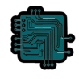
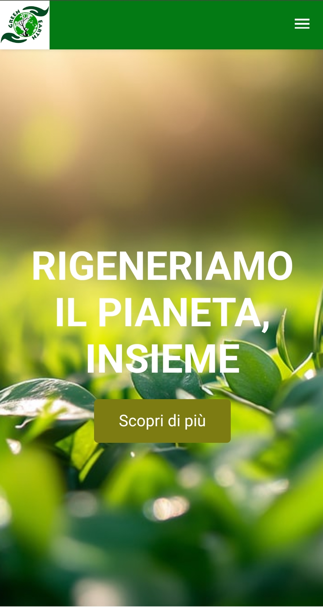
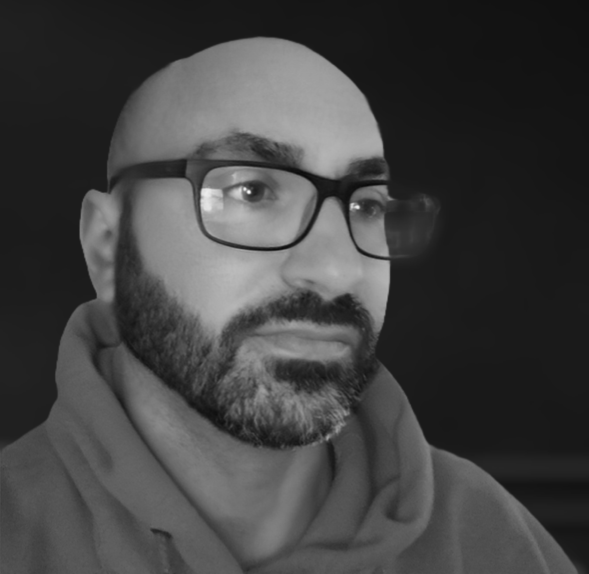

Siti Web
Landing page, siti vetrina e pagine pensate per presentare un brand in modo professionale.

Realizzo siti e interfacce che puntano su chiarezza, impatto visivo e solidità tecnica. Mi interessa creare soluzioni che non siano solo belle da vedere, ma anche veloci, leggibili e orientate a un obiettivo preciso.
Landing page, siti vetrina e pagine pensate per presentare un brand in modo professionale.
Interfacce responsive, attenzione ai dettagli visivi e focus su esperienza utente e performance.
Uso strumenti AI per velocizzare processi, prototipi e flussi digitali più intelligenti.
In evidenza

HTML / CSS
Una landing page dal taglio editoriale, progettata per valorizzare contenuti, struttura e presenza visiva.
Apri il progetto
WordPress
Un blog dedicato alla Toscana, costruito per raccontare luoghi e tradizioni con contenuti chiari e leggibili.
Apri il progettoChi sono

La mia passione per la tecnologia è iniziata con un Commodore 64 e non si è più fermata. Dai primi programmi per creare siti web fino alla programmazione avanzata, ho trasformato la curiosità in competenza. Oggi scrivo codice con l'entusiasmo di allora e l'esperienza di chi sa trasformare idee in soluzioni concrete.
Ho maturato competenze in HTML e CSS grazie a un percorso da autodidatta, spinto dalla passione per il web design e lo sviluppo front-end. Ho seguito corsi su piattaforme come Lacerba, Udemy, freeCodeCamp e Learnn, approfondendo le basi e perfezionando tecniche avanzate per creare siti web moderni, funzionali e ottimizzati.
Sono una persona focalizzata e costante, capace di portare avanti un obiettivo con energia e continuità.
Affronto ogni progetto con ordine, disciplina e attenzione ai dettagli, senza perdere di vista il risultato finale.
Mi adatto ai cambiamenti con flessibilità, trasformando gli ostacoli in occasioni di crescita e miglioramento.